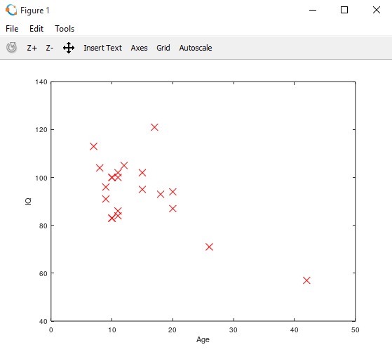
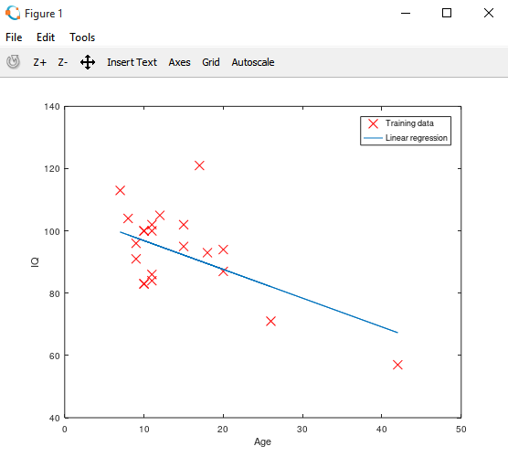
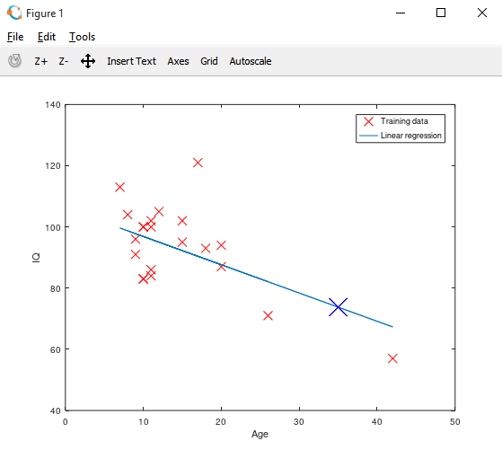
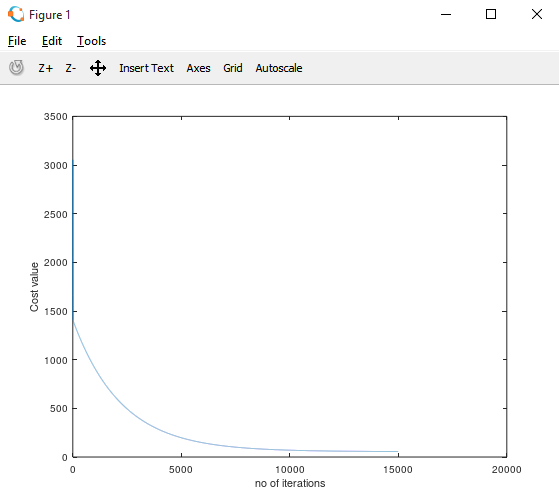

HOME BLOG EBOOKS ABOUT CONTACT SHOP
Now that you are familiar with the basics of octave programming and the theory behind linear regression, it’s time for the real deal. In this section, we will try to implement a very simple example of linear regression (using gradient descent).
For this example, we will try to predict the IQ of a person based on his age. The data set we are using can be downloaded here: agevsiq.
Before anything make sure you are in the right directory to import the text file, otherwise change the directory using the cd command.
>> data = load('agevsiq.txt'); #load the data text file
>> x = data(:,1); #store the age values as matrix x
y = data(:,2); #store the age values as matrix x
>> plot(x,y,'rx','MarkerSize',10); #mark the values on a graph with X's
>> hold on;
>> xlabel('Age');
>> ylabel('IQ');

>> function J = findCost(X,y,theta) #declare the cost function
J = 0; #initialize cost as zero
m = length(X);
htheta = X* theta; #Hypothesis function X*theta
error = htheta -y;
squared_error = error'*error;
average_sq_error = squared_error/m;
J = average_sq_error/2; #Cost value J
end;
>> theta = zeros(2, 1); #initialize theta as 0,0 or any other values
>> iterations = 15000; #a random large no
>> alpha = 0.001; #learning rate
>> J_values = zeros(iterations, 1); #Initialize the cost values before iteration
#plot between cost values and no of iterations is helpful to check if the function is converging to a minimum
>> function [theta,J_values] = gradientDescent(X, y, theta, alpha, num_iters #Declare the gradient descent function
for i = 1:num_iters #Loop to iterate till cost function minimizes
m = length(X);
htheta = X* theta; #Hypothesis function
error = htheta -y;
theta = theta - ((alpha/m) * (X'*error)); #gradient descent vector implementation
J_values(i) = findCost(X, y, theta); #Cost value at an iteration
end;
end;
>> [theta,J_values] = gradientDescent(X, y, theta, alpha, iterations); #calling the gradient descent function
>> theta #theta values corresponding to minimum cost
end;
theta =
106.10373
-0.92372
>> plot(X(:,2), X*theta, '-') #plot of the predicted hypothesis function
>> legend('Training data', 'Linear regression')

>> predict = [1, 35] *theta #Predicting the IQ of a 35 year old person
predict = 73.774
>> hold on;
>> plot(35,predict,'bx', 'MarkerSize',20); #Mark the predicted IQ on the graph

>> t= 1:1:iterations;
>> plot(t,J_values(t));
>> xlabel('no of iterations');
>> ylabel('Cost value');
